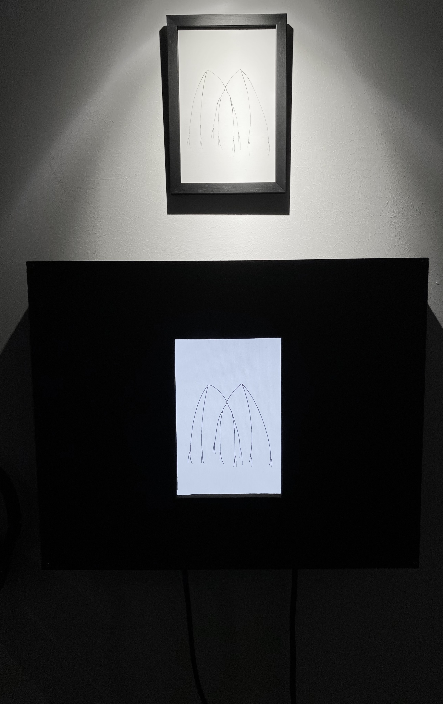
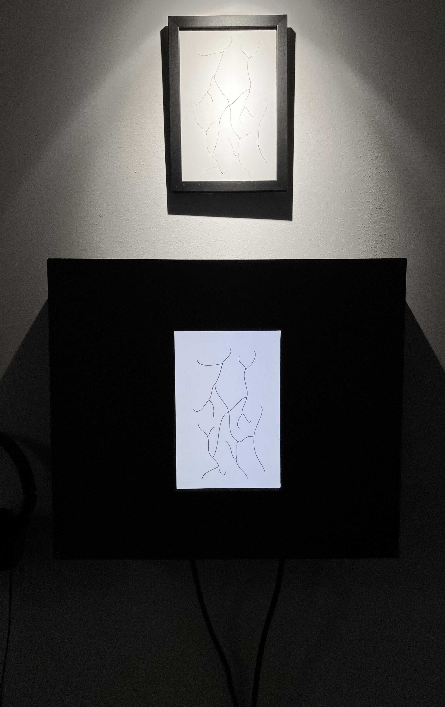
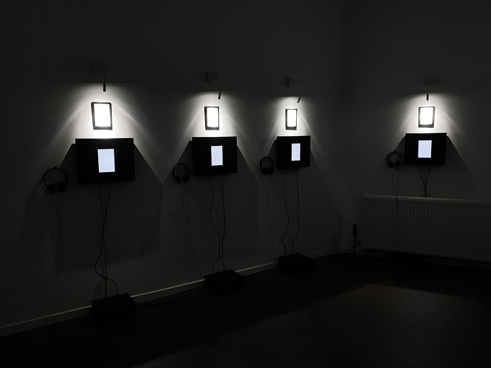
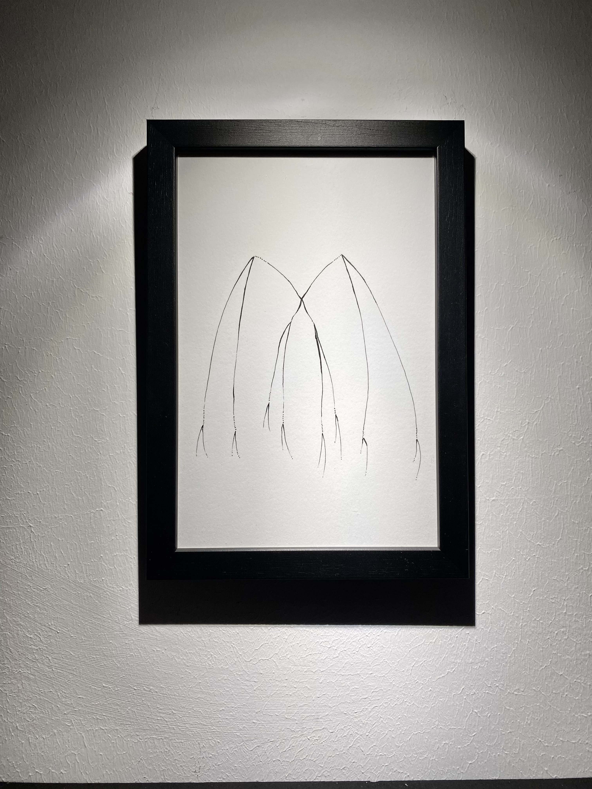

Le travail avec les outils numériques nous confronte constamment à des bugs et erreurs, souvent indésirables et frustrants, qui nuisent à la productivité et au bon déroulement du travail. Trouver une solution devient alors synonyme de réconfort et de soulagement.
Une manière d'interpréter ces moments inattendus est de les voir comme des instants de pause, voire de remise en perspective. On peut aussi y voir, dans les approximations liées aux bugs, une forme d'étrangeté et de "beau".
Ces dessins, rappelant des insectes (bugs en anglais) ou des êtres organiques, sont transformés en sons à partir d'un programme. Un écran associé à chaque dessin permet de visualiser cette transcription. Lors de celle-ci, des bugs et glitches sonores apparaissent. Plutôt que de chercher à corriger ces anomalies pour obtenir un son juste et parfait, je choisis de les laisser exister, créant ainsi des objets sonores et musicaux imparfaits et imprévisible paraissant plus vivants
grâce à la machine.
On peut ainsi imaginer ces dessins comme des créatures numériques dont
la forme influe sur le bruit qu'elles émettent, qui n'existeraient pas sans la
programmation et sans les bugs.
Bugs Musicaux
2025
Dessins, boîtes en bois avec écrans, vidéo, son
Dimensions variables



Du 22 mars au 12 avril 2025
